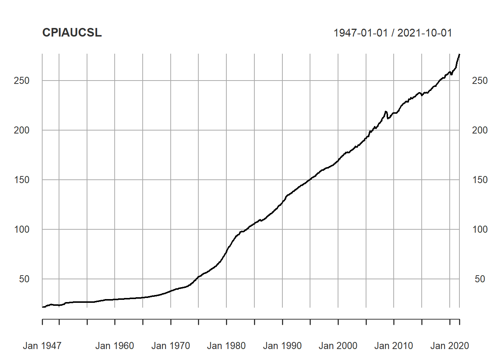

11 Final Report
- 13 pages of text
- 6 graphs/tables
11.1 Basics of time series (when and why we use them, basic terminology) (1-2 pages)
11.2 Autoregressive models (1-2 pages)
11.3 Moving average models (1-2 pages)
11.4 Real-world Application using one of the above techniques (8 pages)
11.4.1 An overview of dataset, why a time series model is appropriate
(1-2 page)
11.4.2 Fitting AR and MR models to the data, explaining the parameters and why I choose them
(4-5 pages)
11.4.3 Discussion & Conclusion
(2-3 pages)
11.5 Forecasting. Key concepts and applying on dataset (2-3 pages)
11.6 Conclusion and looking into the future (1 page)
library(quantmod)
getSymbols("CPIAUCSL", auto.assign = TRUE, src = "FRED")## [1] "CPIAUCSL"getSymbols("USSTHPI", auto.assign = TRUE, src = "FRED")## [1] "USSTHPI"CPI <- read.csv("data/CPIAUCSL.csv")
USHousePriceIndex <- read.csv("data/USSTHPI.csv")
plot(CPIAUCSL)
plot(USSTHPI)